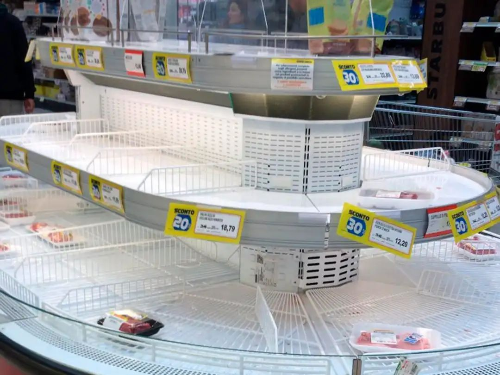
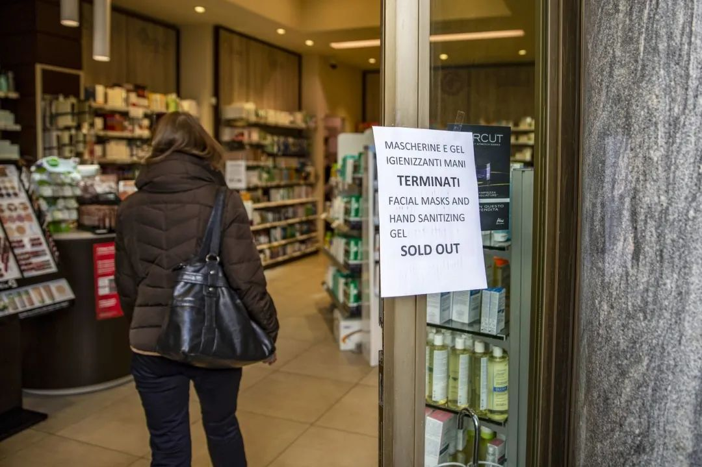
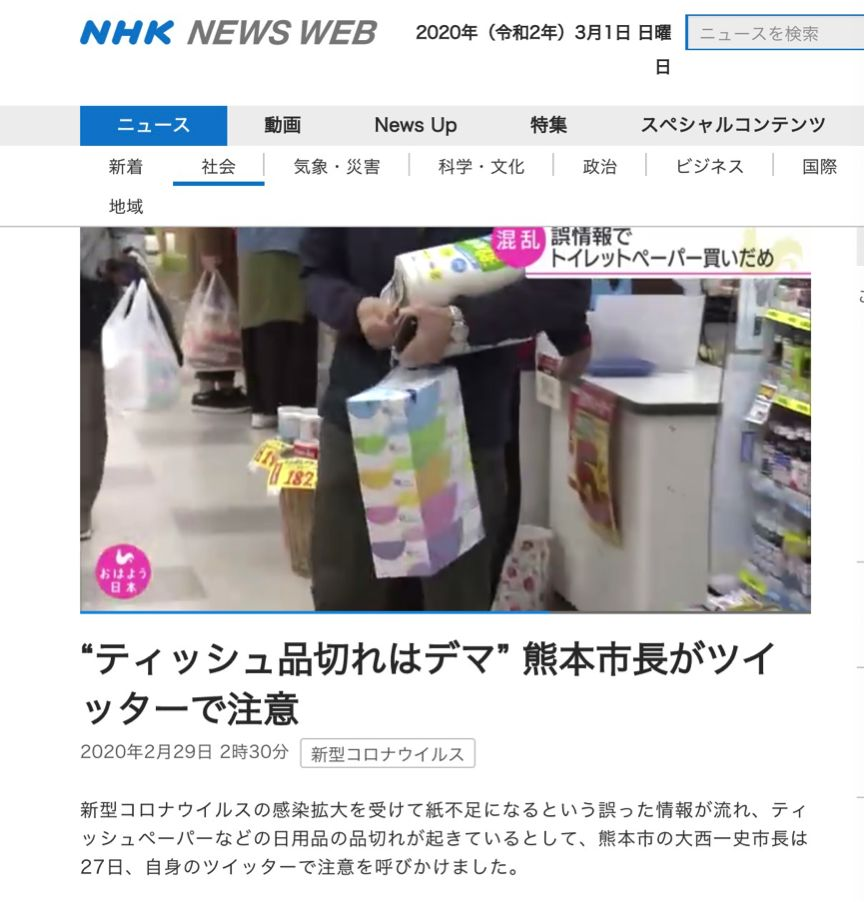
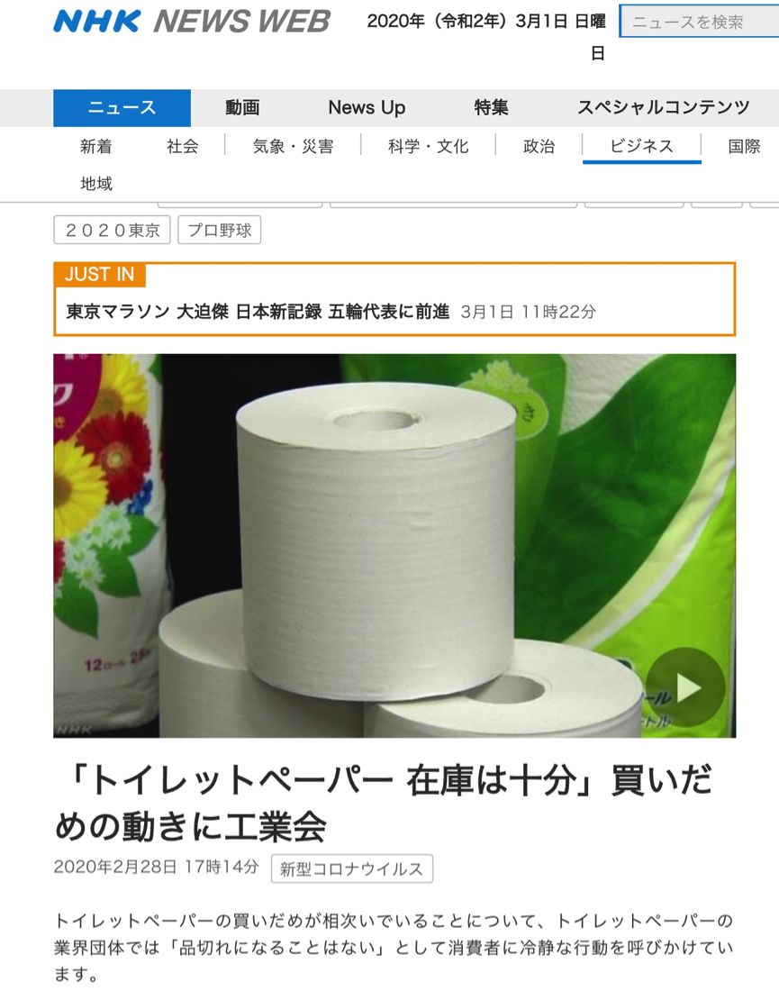
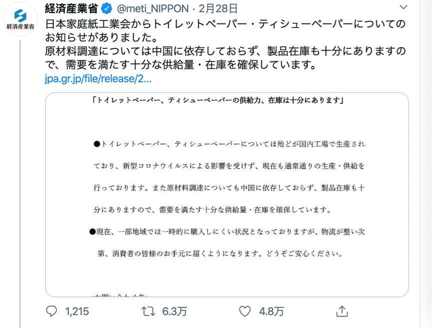

口述实录｜疫情席卷下，一个普通武汉市民的30天心路历程
原文链接 备份链接 我住在汉口，是这次疫情的重灾区。那个被查出疫情源头的华南海鲜市场，就在火车站对面，离我家大概20公里。我希望疫情早日结束，对我们国家的经济影响小一些，所有人都能够平安和健康。 口述 | 小 玲 整理 | 沈 林 我叫小 …

近日，多国新冠肺炎确诊人数暴增。美国出现第二例新冠肺炎死亡病例，意大利新冠肺炎累计病例1694例，日本北海道宣布进入紧急状态，世界卫生组织总干事谭德塞2月28日宣布将新冠肺炎疫情全球风险级别由此前的“高”上调为“非常高”。
尽管多数国家还没有采取防控措施，但民众已经开始囤货……

美国超市里口罩难求
当地时间3月1日，美国华盛顿州出现第二例因新冠肺炎死亡的病例，截至当地时间3月1日18时，美国累计新冠肺炎确诊病例74例，较24小时前增长5例。《华盛顿邮报》认为，新型冠状病毒可能已经在华盛顿州传播了约六周，但一直未被发现，目前华盛顿州已宣布进入紧急状态。随着疫情升级，美国民众已开始囤货。
2月25日，美国疾控中心（CDC）在发布会上确认首例感染路径不明的患者，承认疫情在美国本土进入社区传播阶段。之后的24小时内，美国部分医用口罩的网购价一度飙升至两倍，引发抢购潮。
不少网民在社交媒体称超市、药店里的口罩被抢购一空。除了医用口罩，消费者还储备了洗手液、温度计、食物和部分药品。↓↓↓


在夏威夷、新墨西哥、得克萨斯州等地，居民在超市外排起长队，囤积食物、水、常用药与清洁用品等物资。
美国国土安全部2月27日在官网发布相关指导，建议民众在新冠肺炎流行前，储备2周的水和食物、非处方药物与营养补给品。
不过CDC主任罗伯特·雷德菲尔德2月27日在国会听证会上强调，身体健康的美国人目前无需囤积任何物资。
意大利民众囤积生活物品
当地时间3月1日18点，意大利民防部门表示，该国共计确诊新型冠状病毒肺炎病例1694例，较前一天增加566例，其中34人死亡，83人治愈。
随着意大利疫情变得越来越严重，意大利民众也开始囤积生活物品。

2月23日，意大利米兰的一家超市里，货架上的商品被抢空。图源：美联社

2月23日，米兰一家超市冷藏肉货品销售一空。图源：美联社
2月24日，米兰一家药店入口贴着告示，写着防护面罩和洗手液已售罄。图源：彭博社
日本民众疯抢卫生纸
截至当地时间3月1日晚，日本新冠肺炎感染者共计961人。受新冠肺炎疫情影响，日本民众突然开始疯抢卫生纸，超市、药妆店等地的厕纸均被“抢购一空”。
日本社交媒体上流传着这样的消息：“厕纸和口罩使用的是相同的材料，而厕纸需要从国外进口，因此厕纸和纸类制品都会出现短缺，最好提前购买。”↓↓↓

有网民在社交媒体晒出空空的货架。↓↓↓

据日本《茨城新闻》报道，2月29日，在日本茨城县水户市一家超市，卫生纸放在货架上半个小时就被抢光了，一名男子说：“我家中还有存货，虽然知道存货不好，但是我很焦虑所以还是买了一些。”
据日本放送协会（NHK）报道，受民众抢购潮影响，熊本市药店在卫生纸和纸巾等日用品方面出现缺货。
其中，熊本市东区的药店，从27日开始购买纸制品的人数增多，卫生纸区还贴出告示“每人最多只能买一个”。
药店店长表示：“目前纸品缺货，人们从营业前一小时就开始来排队了。在熊本地震的时候也有过这种情况，但据我所知目前纸品供货状态正常，所以大家只需要购买生活所需的分量就可以。”
日本熊本市市长大西一史2月27日在推特上呼吁：“纸张不足的消息纯属谣言，纸巾几乎都是国产制造，新冠肺炎完全没有影响，并不需要集中抢购，请大家冷静行动。”↓↓↓

为此，日本家庭纸工业会发布声明，日本国内厕纸和口罩用的并不是同一种原料，也不依赖进口，日本98%的厕纸是本土制造，只要不疯狂抢购就不会售罄。↓↓↓

日本经济产业省也出面辟谣，希望大家冷静，不要相信谣言，正常采购生活物资就可以，让卫生纸回归正常的生产和销售轨道。↓↓↓

来源：央视新闻


推荐阅读

点击大图 |富士康最难最贵“复工季”：北上广深部分中介获得返费高达17000元

点击大图 |出生45天婴儿确诊！韩专家称最坏情况是40%国民感染,，疫情或至年底！

原文链接 备份链接 我住在汉口，是这次疫情的重灾区。那个被查出疫情源头的华南海鲜市场，就在火车站对面，离我家大概20公里。我希望疫情早日结束，对我们国家的经济影响小一些，所有人都能够平安和健康。 口述 | 小 玲 整理 | 沈 林 我叫小 …
原文链接 备份链接 7610 来源：正和岛 作者：叶青 02-28 1、数字 27日，农历二月初五。阴冷。小雨。27日，全国新增确诊病例327例，新增死亡病例44例（湖北41例，北京2例，新疆生产建设兵团1例），新增疑似病例452例。截 …
原文链接 备份链接 澎湃新闻记者 于潇清 近日，韩国和日本新冠肺炎疫情防控形势日趋严峻，引起国际社会关注。 据韩国中央防疫对策本部2月28日最新通报，截至当天上午9点，韩国再新增新冠肺炎确诊病例256例，累计2022例，死亡病例达13例。 …
原文链接 备份链接 总体而言，港人对待疫情，后来就没有内地那么紧张了。我妈妈讲，她觉得作为一个香港居民，自己最大的感受是彷徨。她抱怨道，在香港，没工开等于没饭吃了；公司起先通知放假到24号，何时复工再议，而现在仍然是等通知的状态。 …
原文链接 备份链接 对SARS毫无印象的我，倒不太担心此次新冠肺炎疫情……我更希望的是这场肺炎疫情能够赶快结束，倒不是因为每天在家的诸多不便，而是我担心这样下去会影响到中国乃至世界经济。 口述 | Philippe Régnier …